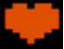

About
This project was made by @aroncremona as one of the requirements for Free Code Camp's Front End Web Develoment Certificate using Javascript and JQuery. I wanted to make a Pomodoro that wasn't like every other Pomodoro. Let me know if I succeeded.
 The Ruby respresents your Total Score for the day (your total productive time). Try to beat your high score to maximize your productivity and make more Rubies. If your boss doesn't pay you in Rubies, get a new boss.
The Ruby respresents your Total Score for the day (your total productive time). Try to beat your high score to maximize your productivity and make more Rubies. If your boss doesn't pay you in Rubies, get a new boss.
 Actually working is the Key to productivity. When you are supposed to be working, this field will be active with a green count down timer. Stop watching the timer and get working!
Actually working is the Key to productivity. When you are supposed to be working, this field will be active with a green count down timer. Stop watching the timer and get working!
 Breaks are the bomb! This field is active with a red countdown timer when you are supposed to be relaxing and recharing your mental batteries. This is the time to check Facebook, Twitter, Snap Chat, LOLCats or whatever it is cool kids do.
Breaks are the bomb! This field is active with a red countdown timer when you are supposed to be relaxing and recharing your mental batteries. This is the time to check Facebook, Twitter, Snap Chat, LOLCats or whatever it is cool kids do.
 Every Pomodoro cycle you complete adds another heart to your Life Bar. When your Life Bar is looking healthy, GO HOME!
FAQ
Q: Can I change the music?
A: Why would you need to? If this song doesn't take your productivity to levels you never imagined, call a doctor because you might be dead inside.